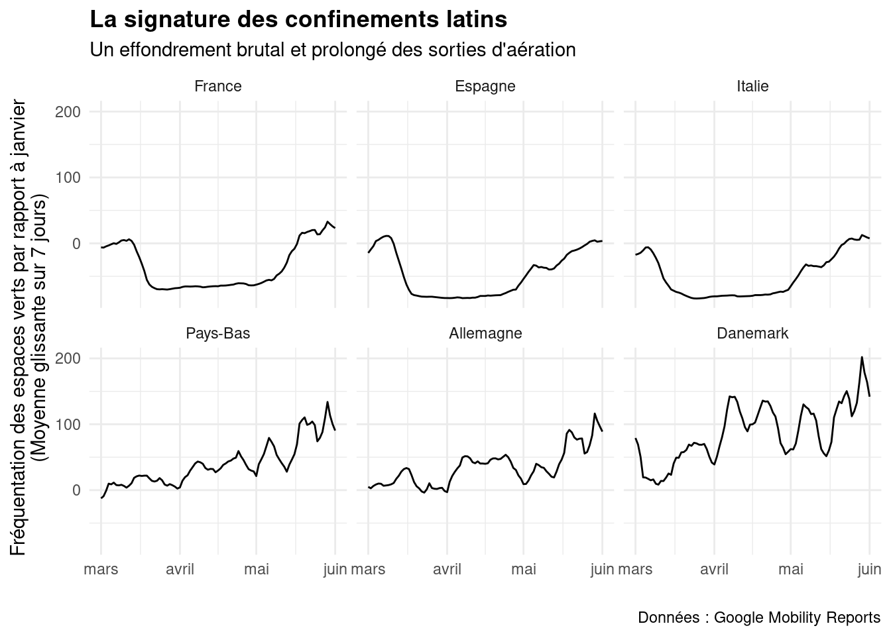

library(tidyverse)
library(lubridate)
library(countrycode)
library(zoo)Charger les packages nécessaires
Choisir le thème des graphiques
theme_set(theme_minimal() +
theme(plot.title = element_text(face = "bold")))Récupérer les données
La manière la plus simple de récupérer les données de mobilité est de passer par le package {tidycovid19}
google_mobility_country_path = here::here("data", "google_mobility_country.rds")
# tidycovid19::download_google_cmr_data(type = "country", cached = T) |>
# write_rds(file = google_mobility_country_path)
google_mobility_country = read_rds(google_mobility_country_path)À quoi ressemblent-elles ?
glimpse(google_mobility_country)Rows: 130,824
Columns: 10
$ iso3c <chr> "ARE", "ARE", "ARE", "ARE", "ARE", "ARE", "ARE", "AR…
$ date <date> 2020-02-15, 2020-02-16, 2020-02-17, 2020-02-18, 202…
$ place_id <chr> "ChIJvRKrsd9IXj4RpwoIwFYv0zM", "ChIJvRKrsd9IXj4RpwoI…
$ retail_recreation <dbl> 0, 1, -1, -2, -2, -2, -3, -2, -1, -3, -3, -2, 1, 1, …
$ grocery_pharmacy <dbl> 4, 4, 1, 1, 0, 1, 2, 2, 3, 0, 2, 1, 5, 5, 7, 10, 7, …
$ parks <dbl> 5, 4, 5, 5, 4, 6, 6, 4, 3, 5, 3, -3, -1, -1, -1, 2, …
$ transit_stations <dbl> 0, 1, 1, 0, -1, 1, 0, -2, -1, -1, -2, -2, -1, -1, -1…
$ workplaces <dbl> 2, 2, 2, 2, 2, 1, -1, 3, 4, 3, 3, 3, 3, 1, 5, 4, 4, …
$ residential <dbl> 1, 1, 1, 1, 1, 1, 1, 1, 1, 1, 1, 1, 1, 1, 0, 1, 1, 1…
$ timestamp <dttm> 2022-11-05 09:21:06, 2022-11-05 09:21:06, 2022-11-0…Choisir nos bornes temporelles
date_beginn = ymd(20200301)
date_end = ymd(20200601)Filtrer et agréger
google_mobility_country |>
filter(between(date, date_beginn, date_end)) |>
group_by(iso3c) |>
summarise(across(4:9, ~ mean(.x, na.rm = T)))# A tibble: 135 × 7
iso3c grocery_pharmacy parks transit_stations workplaces residential
<chr> <dbl> <dbl> <dbl> <dbl> <dbl>
1 ABW -20.1 -32.2 -51.3 -43.9 19.8
2 AFG -13.0 -9.92 -30.9 -21.1 9.22
3 AGO -16.3 -21.5 -41.6 -22.5 16.7
4 ARE -19.3 -54.6 -56.5 -35.4 21.3
5 ARG -28.0 -73.5 -51.9 -36.8 19.7
6 ATG -24.4 -28.6 -51.1 -41.6 16.9
7 AUS -1.32 -24.6 -42.6 -22.8 12.1
8 AUT -18.7 -8.76 -46.3 -37.5 13.4
9 BEL -16.6 -3.46 -49.1 -43.0 18.1
10 BEN -3.51 0.0215 -13.9 -6.25 6.43
# ℹ 125 more rows
# ℹ 1 more variable: timestamp <dttm>Cartographier
Sélectionner 6 pays européens
selection_pays_europe = c("France", "Espagne", "Italie", "Pays-Bas", "Allemagne", "Danemark")Les comparer
google_mobility_country |>
filter(between(date, date_beginn, date_end)) |>
mutate(pays = countrycode(iso3c, origin = "iso3c", destination = "country.name.fr"),
pays = fct_relevel(pays, selection_pays_europe),
parks_roll7 = rollmean(parks, k = 7, fill = NA)) %>%
filter(pays %in% selection_pays_europe) %>%
ggplot(aes(x = date, y = parks_roll7)) +
geom_line() +
facet_wrap(~ pays) +
labs(title = "La signature des confinements latins",
subtitle = "Un effondrement brutal et prolongé des sorties d'aération",
x = "",
y = "Fréquentation des espaces verts par rapport à janvier\n(Moyenne glissante sur 7 jours)",
caption = "Données : Google Mobility Reports")
Citation
BibTeX
@online{boulakia2023,
author = {Boulakia, Théo and Mariot, Nicolas},
title = {La signature des confinements latins},
date = {2023-06-25},
url = {https://samanthacsik.github.io/signature-confinements-latins/},
langid = {fr}
}
Veuillez citer ce travail comme suit :
Boulakia, Théo, and Nicolas Mariot. 2023. “La signature des
confinements latins.” June 25, 2023. https://samanthacsik.github.io/signature-confinements-latins/.